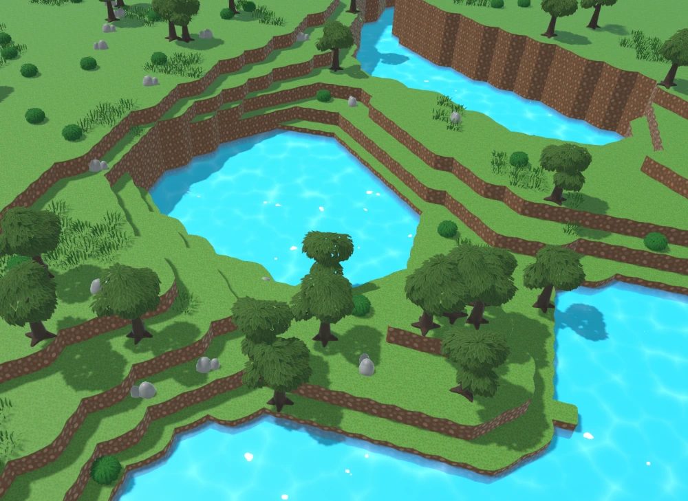

Performance Focus
Using methods such as multithreading, chunk culling and object pooling to achieve playable performance; Not wanting compromise on render distance of foliage density, optimisation was a big task while working on this project.

An experimental alternative method of voxel terrain generation that uses tiling rules to build a world out of premade parts.
Developed to test the application of handcrafted tiles in procedural generation, to create a unique environment for an open world game.
For an overview of the project and a look into the systems created to generate the world, the video goes through it all -

Using layered noise to generate an environment, featuring an entity management system to spawn foliage across its surface.
Using methods such as multithreading, chunk culling and object pooling to achieve playable performance; Not wanting compromise on render distance of foliage density, optimisation was a big task while working on this project.

Instead of using a method like 'cubemarching' or generating meshes based on the voxels like in Minecraft, I created custom tiles for each part of the terrain which are placed using a rule system.
Doing it this way allows for more expression in the world generation by allowing artists to full customise the tiling environment.